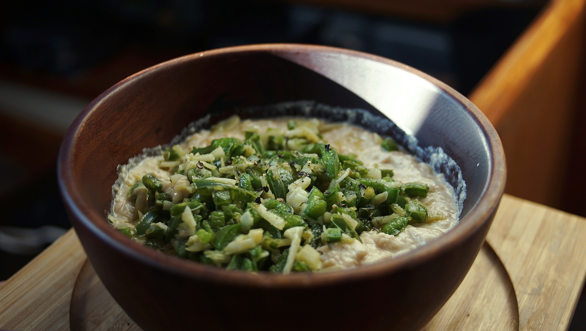

soybean hummus with jalapenos
3 servings — 5 minutes
While in Japan, we didn't have access to chickpeas and so we started to make hummus with soybeans. The result is amazing, and both of us now prefer this version. Soybeans have a rich, creamy texture, and a neutral flavor.
Recommendations
Acid: I sometimes add lime, or apple cider vinegar if I don't have access to lemon. Doing this doesn't alter the flavor.
Soybeans: It is possible to make hummus with any bean, but the taste and texture will differ. I have a preference for chickpeas and red lentils. If using chickpeas, if you want a very smooth hummus take the skins off prior to blending.
Miso: I used a miso (米こうじみそ) that is characterized by the mellow sweetness of the rice. Using a darker variety would overwhelm the dish. If sensitive to soy, try and find chickpea miso.
Toppings: Jalapeno peppers add kick, it makes this dish rather spicy and can be omitted. If you're not a fan of spicy, try adding roasted red peppers instead.
Garlic: We like to put raw nira (Japanese garlic chives) as a topping, or instead of garlic. Nira is very mild, and pairs well with soybeans.
 soy beans 150 g, dry
soy beans 150 g, dry tahini 45 ml
tahini 45 ml lemon 1/2, juiced
lemon 1/2, juiced white miso 15 ml
white miso 15 ml olive oil 15 ml
olive oil 15 ml garlic 4 cloves
garlic 4 cloves jalapeno peppers 2
jalapeno peppers 2 black pepper 5 g
black pepper 5 g
hummus
- Soak 150 g of dry soybeans (yields 300 g cooked beans) overnight, or for a minimum of 8 h. Then, cook in a pressure cooker for 15 minutes. Strain beans, rinse and transfer to a bowl.
- In this bowl, puree the cooked soybeans with 45 ml (3 tbsp) tahini, the juice of 1/2 a lemon, 15 ml (1 tbsp) of white miso and 30 ml (2-3 tbsp) of water. I used a potato masher, but any blending tool will do.
- Bring a pan to medium heat, add 15 ml (1 tbsp) of olive oil, then add 4 cloves of chopped garlic. Pan-fry for 2-3 minutes, then add 2 chopped jalapeno peppers and continue to pan-fry for an additional 5 minutes or until well-cooked. Add mixture overtop of soybean hummus, and season with black pepper.